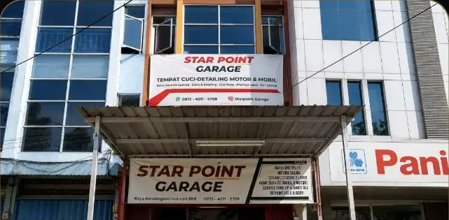
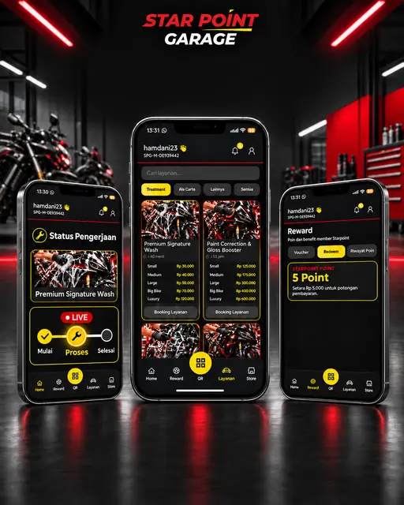

Wash & detailing
Pembersihan bodi, interior, velg, helm, dan detail kecil kendaraan.
Perawatan kendaraan yang rapi dan transparan—mulai dari booking sampai pengerjaan selesai.

Perawatan kendaraan dalam satu tempat dengan status pekerjaan yang jelas.
Pembersihan bodi, interior, velg, helm, dan detail kecil kendaraan.
Koreksi cat, perawatan baret, dan perlindungan nano coating.
Pengecatan ulang serta penanganan noda tar dan karat.

Customer dapat melihat proses kendaraan tanpa harus terus menunggu di lokasi.